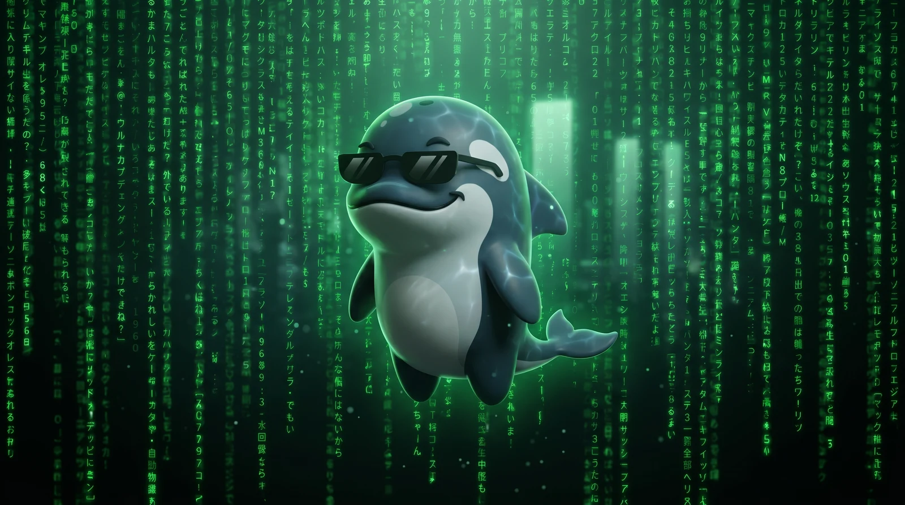

Stale training data
Claude's knowledge cutoff means it doesn't know about new framework methods, changed APIs, or Move 2024 syntax. It writes code that looks right but doesn't compile.

Claude Code Pluginsui-pilot bundles 812 documentation files from six MystenLabs corpora, bridges the Move LSP and Sui Prover into Claude Code, drives end-to-end dapp tests with the wallet in the loop, and ships five specialized skills — all behind a doc-first agent that reads the docs before writing code. No hallucinated APIs, no deprecated patterns, no stale training data.
Sui Move evolves rapidly. LLM training data goes stale fast — and agents confidently generate outdated patterns, deprecated APIs, and syntax that no longer compiles.
Claude's knowledge cutoff means it doesn't know about new framework methods, changed APIs, or Move 2024 syntax. It writes code that looks right but doesn't compile.
Without LSP integration, Claude can't check whether the code it generates actually type-checks, has the right abilities, or matches the current framework signatures.
Current docs are always in context. The Move LSP catches errors in real time. Every answer is grounded in what works today, not what worked six months ago.
A slim always-loaded preamble routes topics to the right corpus and carries a compact ecosystem concept map. Skills invoke procedural workflows. MCP servers provide real-time tooling. No hooks, no matchers, no precomputed indexes — the agent navigates the corpora directly.
Everything Claude needs for Sui/Move development, bundled as a single Claude Code plugin.
Six corpora synced from the official MystenLabs repos. Local, searchable, always current.
Two MCP servers bridge external tooling into Claude Code.
| Server | Tools | What it wraps |
|---|---|---|
| move-lsp | move_diagnostics, move_hover, move_completions, move_goto_definition, move_find_references, move_document_symbols, move_type_definition, move_code_actions, move_inlay_hints, move_rename |
move-analyzer LSP |
| sui-prover | prove_package, list_specs, prover_capabilities |
sui-prover binary |
| Command | Purpose |
|---|---|
/sui-pilot | Doc-first entry point — routes to the specialized agent |
/sui-setup | Check the local toolchain and offer to install what is missing |
/sui-e2e | End-to-end dapp tests with hands-free Slush wallet approval |
/oz-math | OpenZeppelin math library recommendations for DeFi arithmetic |
/specify | Author #[spec(prove)] formal specs and verify via sui-prover |
/verify | Re-verify that authored specs still hold against current code |
/sui-e2e tests a Sui dapp in a real browser with a real wallet, hands-free.
It brings up Chrome for Testing on the debug port with the wallet profile, confirms
chrome-devtools-mcp attached to that browser instead of spawning its own,
then drives every Slush approval — connect, sign-in message, transaction signing
— without a manual click.
This exists because chrome-devtools-mcp cannot see
chrome-extension:// pages: wallet popups never appear in
list_pages, so every wallet end-to-end test stalls at the first approval.
The skill bundles a dependency-free Chrome DevTools Protocol client (Python standard
library only) that drives those popups directly. Wallet state is never touched — a
locked wallet or a wiped profile stops the run and asks you.
sui-pilot is a Claude Code plugin. Install it from the marketplace and start asking Sui/Move questions.
From any Claude Code session:
/plugin marketplace add contract-hero/plugin-marketplace
/plugin install sui-pilot@contract-heroThe Move LSP requires move-analyzer; formal verification requires sui-prover.
curl -sSfL https://raw.githubusercontent.com/MystenLabs/suiup/main/install.sh | sh
suiup install sui
suiup install move-analyzerOr run /sui-setup and let the plugin report what is missing, flag a
sui / move-analyzer version mismatch, and offer to install the gaps.
MCP servers launch at session start. Close and reopen Claude Code to activate the plugin.
Ask a question, run a skill, or get diagnostics:
What are shared objects in Sui and when should I use them?
/oz-math
/specifysui-pilot's architecture was shaped by empirical evaluation. These artifacts document the methodology and findings.
The 27-task A/B eval that shaped v2: scoring rubric, baselines, and the framing axis.
Should the docs be pointed at on demand or always-loaded as a concept map?
Interactive walkthrough of what enters Claude's context during a real Sui workflow.
The /specify + /verify investigation: spec authoring, drift detection, and the invariant-driven deliverable redesign.
Behavioral notes from a 2026-05-19 eval run on how the agent actually discovers and reads the bundled docs.